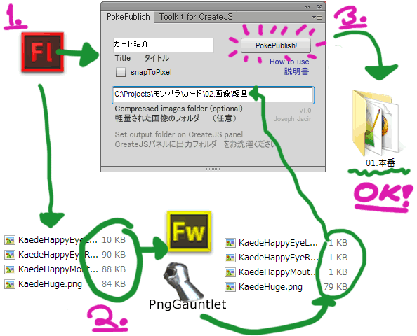

Publishes HTML from Flash using toolkit for CreateJS and automatically converts the HTML, replaces the files with the compressed version, and adds loader.gif. With one button press, your animation is ready to be used in Pokelabo games.
Toolkit for CreateJSをつかってFlashからHTMLをパブリッシュします。そして、自動的にHTMLを変換して、画像を軽量版で上書きして、loader.gifを書き込みます. ボタンを一つ押すだけで、アニメーションをポケラボのゲームにすぐに使えます。

C:\Users\user.name\AppData\Local\Adobe\Flash CS6\ja_JP\Configuration\WindowSWF
^ ^ ^
Windows login Flash version
Windowsユーザー名 Flashバージョン
Assumes you have Toolkit for CreateJS v1.2 installed. If you do not, use the web-based tool.
Toolkit for CreateJS v1.2がインストールしたことが仮定します。そうしない場合、webのツールをご利用ください。